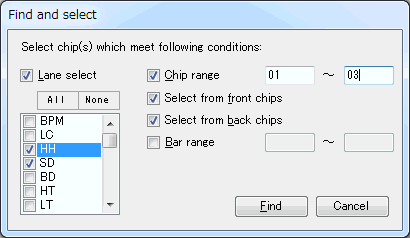

| Advanced operations |
|---|
| Search |
Click [Edit(E)] - [Find(F)] in the menubar to open Find dialog.

Lane select
Chip range
Select from front chips
Selrct from back chips
Bar range
Specify the search conditions and click [Find]. The chips that satisfy conditions are selected.
If you want to limit the target lanes, check it.
And check the lane you'd like to use as target lanes. Click [All] to select all lanes. Click [None] to cancel all lanes.
To specify the range of chip number to search.
Specify "from" and "to" number.
Both numbers are 36-decimal expression (01-ZZ).
If you specify one of them, the chips would be specified which has that chip number.
If you don't specify both of them, all ranges (01-ZZ) would be specified.
Check it if you want to select only front chips.
Check it if you want to select only back chips.
Specify bar ranges where you want to select.
Bar number should be 000-Z99
(the hundred's digit should be 0-9 and A-Z, and
the ten's digit and the one's digit should be 0-9).
If you specify one of them, the chips would be specified in that bar.
If you don't specify both of them, all ranges (000-Z99) would be specified.